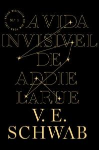
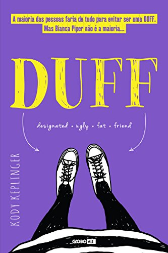
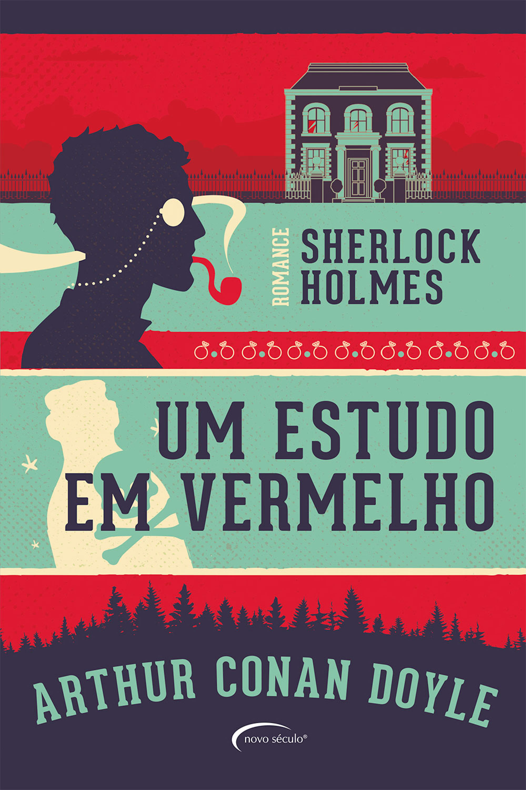

O Lado Bom da Vida
Sinopse
Pat Peoples, um ex-professor de história na casa dos 30 anos, acaba de sair de uma instituição psiquiátrica. Convencido de que passou apenas alguns meses naquele “lugar ruim”, Pat não se lembra do que o fez ir para lá. O que sabe é que Nikki, sua esposa, quis que ficassem um "tempo separados".
Tentando recompor o quebra-cabeças de sua memória, agora repleta de lapsos, ele ainda precisa enfrentar uma realidade que não parece muito promissora. Com seu pai se recusando a falar com ele, sua esposa negando-se a aceitar revê-lo e seus amigos evitando comentar o que aconteceu antes de sua internação, Pat, agora um viciado em exercícios físicos, está determinado a reorganizar as coisas e reconquistar sua mulher, porque acredita em finais felizes e no lado bom da vida.
À medida que seu passado aos poucos ressurge em sua memória, Pat começa a entender que "é melhor ser gentil que ter razão" e faz dessa convicção sua meta. Tendo a seu lado o excêntrico (mas competente) psiquiatra Dr. Patel e Tiffany, a irmã viúva de seu melhor amigo, Pat descobrirá que nem todos os finais são felizes, mas que sempre vale a pena tentar mais uma vez.
Fonte: Google Books
| Data da primeira publicação |
Autor |
Idioma Original |
Gênero |
| 2 de setembro de 2008 |
Matthew Quick |
Inglês |
Romance, drama, humor |
A Vida Invisível de Addie LaRue

Sinopse
França: 1714. Addie LaRue não queria pertercer a ninguém ou a lugar nenhum. Em um momento de desespero, a jovem faz um pacto: a vida eterna, sob a condição de ser esquecida por quem a conhecer. Um piscar de olhos, e, como um sopro, Addie se vai. Uma virada de costas, e sua existência se dissipa na memória de todos.
Após tanto tempo vivendo uma existência deslumbrante, aproveitando a vida de todas as formas, fazendo uso de tantos artifícios quanto fosse possível e viajando pelo tempo e espaço, através dos séculos e continentes, da história e da arte, Addie entende seus limites e descobre — apesar de fadada ao esquecimento — até onde é capaz de ir para deixar sua marca no mundo.
Trezentos anos depois, em uma livraria, um acontecimento inesperado: Addie LaRue esbarra com um rapaz.
Ele enuncia cinco palavras.
Cinco palavras capazes de colocar a vida que conhecia abaixo:
Eu me lembro de você.
Fonte: Google Books
| Data da primeira publicação |
Autor |
Idioma Original |
Gênero |
| 6 de outubro de 2020 |
V. E. Schwab |
Inglês |
Literatura fantastica, ficção histórica |
O Guia do Mochileiro das Galáxias

Sinopse
Considerado um dos maiores clássicos da literatura de ficção científica, O Guia do Mochileiro das Galáxias vem encantando gerações de leitores ao redor do mundo com seu humor afiado.
Este é o primeiro título da famosa série escrita por Douglas Adams, que conta as aventuras espaciais do inglês Arthur Dent e de seu amigo Ford Prefect.
A dupla escapa da destruição da Terra pegando carona numa nave alienígena, graças aos conhecimentos de Prefect, um E.T. que vivia disfarçado de ator desempregado enquanto fazia pesquisa de campo para a nova edição do Guia do Mochileiro das Galáxias, o melhor guia de viagens interplanetário.
Fonte: Google Books
| Data da primeira publicação |
Autor |
Idioma Original |
Gênero |
| 12 de outubro de 1979 |
Douglas Adams |
Inglês |
Ficção ciêntifíca, romance, humor |
The Duff

Sinopse
Em um grupo de amigas, a DUFF - sigla para Designated Ugly Fat Friend - é aquela que não se destaca, a menos atraente da turma. Ela não se enquadra nos padrões de beleza tradicionais, ou se preocupa menos com o visual, mas nem por isso deixa de ter seus encantos. Bianca Piper é esse tipo de garota. E estava muito bem, até que Wesley Rush, o pegador da escola, veio puxar conversa dizendo que ser legal com a DUFF o ajudaria a se dar bem com suas amigas Casey e Jessica. A partir de então, Bianca começa a se questionar: ela seria a amiga feia?
As vantagens e as desvantagens de ser uma DUFF, o que leva alguém a pensar que é uma e outras dúvidas começam a ocupar os pensamentos de Bianca e só não dominam sua cabeça porque ela tem problemas maiores. O casamento de seus pais não vai bem e no dia em que ela descobre que eles estão se divorciando, decide sair com suas amigas para esquecer. Enquanto Casey e Jess se divertem, Bianca encontra Wesley e, num impulso, o beija.
Os dois começam uma espécie de inimizade colorida. Bianca acha Wesley um galinha, que se aproveita da beleza e do dinheiro para ficar com o maior número de meninas possível, mas, no fundo, sente-se atraída por ele. Wesley é um cara amigável e não perde uma oportunidade de ficar com ela, ainda que continue chamando Bianca de DUFF. Com a convivência, os dois descobrem que as aparências enganam.
Bianca Piper é uma protagonista independente, boa aluna, cínica e descolada. Com senso de humor e diálogos afiados, Kody Keplinger criou um romance sobre a amizade e o amor próprio, que aborda com leveza questões como a competição entre as meninas e a importância dada às aparências. Ao enfrentar seus problemas, Bianca amadurece e descobre que os rótulos que colocamos uns nos outros são armadilhas muito perigosas.
Fonte: Google Books
| Data da primeira publicação |
Autor |
Idioma Original |
Gênero |
| 7 de setembro de 2010 |
Kody Keplinger |
Inglês |
Ficção juvenil |
Sherlock Holmes: Um Estudo em Vermelho

Sinopse
Romance policial escrito em 1886 pelo autor britânico Arthur Conan Doyle, e publicado um ano depois, a história marca a primeira aparição de Sherlock Holmes e do dr. Watson, que se tornariam dois dos personagens mais famosos da ficção popular. O título do livro deriva de um discurso proferido por Holmes, um detetive consultor, a seu amigo e cronista Watson sobre a natureza de seu trabalho, no qual ele descreve a investigação do assassinato da história como seu estudo em vermelho:Há o fio vermelho do assassinato correndo pela meada descolorida da vida, e nosso dever é desemaranhá-lo, isolá-lo e expor cada centímetro dele.
Fonte: Google Books
| Data da primeira publicação |
Autor |
Idioma Original |
Gênero |
| 1887 |
Arthur Conan Doyle |
Inglês |
Romance, mistério, ficção policial |